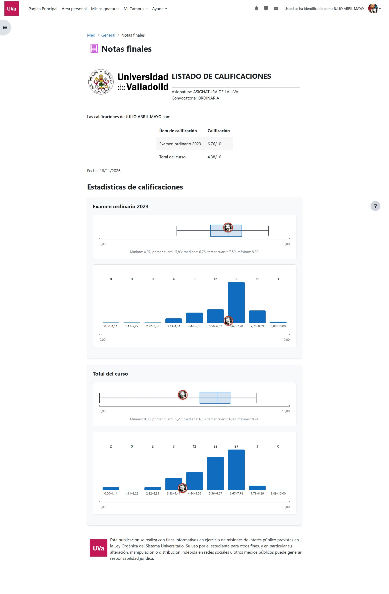

01
Individual publishing
Each student sees only their own grades, with maximum or scale references, selected feedback and the viewing date.
- Personalised view for every user
- Student selection for teacher previews
- No exposure of other identities or grades
